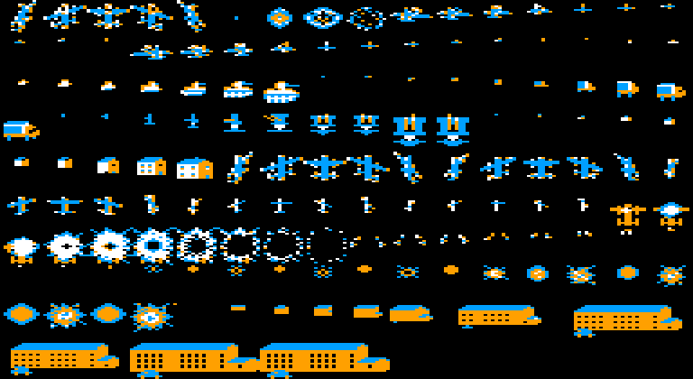
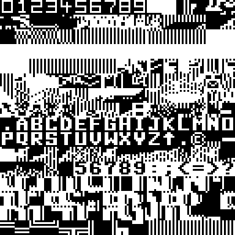

<meta charset="utf-8">
<meta name="viewport" content="width=device-width, initial-scale=1">
<title>{{title}}</title>
<link rel="preconnect" href="https://fonts.googleapis.com">
<link rel="stylesheet" href="https://fonts.googleapis.com/css2?family=Lato:wght@400;700;900&family=IBM+Plex+Mono:wght@400;500&display=swap">
<link rel="stylesheet" href="reference/hunter-page.css">
<!-- tabs -->
<header class="hero">
  <p class="eyebrow">{{platform}} · {{year}} · {{publisher}}</p>
  <h1>{{title}}</h1>
  <p class="sub">Distance is faked with sprites drawn at several sizes, and a raster interrupt reuses the same hardware sprites twice down the screen.</p>
</header>
<main class="wrap">
<section id="sizes">
  <p class="fig">01 · The sprite sheet</p>
  <h2 class="t">Every aircraft, vehicle and building comes in several sizes</h2>
  <p class="lede">The game has no 3D arithmetic. A tank far away is a small picture of a tank, and the same tank near the plane is a big one.</p>
  <div class="plate"><p class="cap">The 64-byte blocks of the sprite area <code>$5000</code> to <code>$7FFF</code> that hold shapes, drawn as the video chip's multicolour sprites. The page picked these colours; the game sets its own for each kind of object. Read from the play snapshot on 13 November 2026.</p></div>
  <p>Reading along the rows, a shape shrinks step by step: the fighters and jets, the tanks, the lorries, the houses and the long building the plane strafes at the end each have a run of pictures from a few pixels wide to the full 24. The sorting routines copy each object's picture number from byte 9 of its record into the pointer tables at <code>$8520</code> to <code>$852F</code>, and <code>$22B0</code> picks the plane's shadow from the plane's height. The explosions at the bottom of the sheet are a run of round bursts that grow and break up.</p>
</section>

<section id="bands">
  <p class="fig">02 · Reusing the sprites</p>
  <h2 class="t">Three raster bands, two sets of sprite positions</h2>
  <p class="lede">The picture is cut into bands by the raster interrupt, and each band can show different sprites.</p>
  <p>The video chip has eight sprites. The game's interrupt (<code>$13AB</code>) runs three times a frame, at different raster lines. The first band loads the table at <code>$8060</code> into the chip's sprite registers and the sprite pointers from <code>$8520</code>. The second loads the table at <code>$8090</code>, from the byte for sprite 4 onward, with the pointers from <code>$8528</code>. The third band changes the background colour and the screen mode for the status panel. Because the sprite positions change between bands, a sprite drawn near the horizon and a sprite drawn near the plane can be the same hardware sprite.</p>
  <p>The routines at <code>$17A0</code>, <code>$1BFD</code> and <code>$1F8D</code> sort each family of objects by height and write each one's position, colour and pointer into those two tables, so that the four records of a family can be drawn by the sprites the band has.</p>
</section>

<section id="ground">
  <p class="fig">03 · The ground</p>
  <h2 class="t">The ground is text, scrolled by copying</h2>
  <p class="lede">The fields are made from the character set, and the scroll moves characters, not pixels.</p>
  <div class="plate"><p class="cap">The 256 characters at <code>$4800</code> as the video chip reads them, drawn here in white on black. Letters and digits for the score line sit beside the stripe and block patterns that build the fields.</p></div>
  <p>Every eighth frame the scroll routine <code>$1500</code> moves the ground rows one character to the left or right, by copying each character to its neighbour (<code>$15C0</code> and <code>$1600</code>). The plane's scroll speed decides which direction, and how often a column is shifted. In play the stripes of the fields are wider towards the bottom of the screen, and that is most of the depth the ground has.</p>
</section>
</main>
<footer style="margin:16px 0 0;padding:22px var(--gx) 0;border-top:1px solid #e0ded8;font-family:'IBM Plex Mono',ui-monospace,Menlo,monospace;font-size:12px;color:#80838a"><a href="https://github.com/gamesexplained/gamesexplained" style="color:#1f5fa8;text-decoration:none">GitHub</a> · <a href="https://discord.gg/3V9GWyRDWV" style="color:#1f5fa8;text-decoration:none">Discord</a><br>© Games Explained contributors. Write-ups, facts and symbol maps are available under <a href="https://creativecommons.org/licenses/by-sa/4.0/" style="color:#1f5fa8;text-decoration:none">CC BY-SA 4.0</a>; code under <a href="https://opensource.org/licenses/MIT" style="color:#1f5fa8;text-decoration:none">MIT</a></footer>
